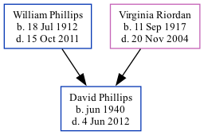

David Anthony Phillips 1940 - 2012
[ Home ] | [ Calendar ] | [ Surnames Index ] | [ Family History ]The child of William Phillips (a telegram delivery man per census at age 17) and Virginia Riordan, David Phillips, the uncle of Michele Copp (née Phillips), was born in Georgia in Jun 19401. In 1950, he lived in Atlanta, Fulton, Georgia, USA1.
He died on Jun 4, 2012.
Parents
- William Hiram was born on Jul 18, 1912
- Virginia Rita Mae was born on Sep 11, 1917
Citations
- 1950 United States Federal Census Ancestry.com Operations, Inc. (Department of Commerce. Bureau of the Census. 1913-1/1/1972. Population Schedules for the 1950 Census, 1950 - 1950. Washington, DC: National Archives at Washington, DC. Population Schedules for the 1950 Census, 1950 - 1950. NAID: 43290879. Records of the Bureau of the Census, 1790 - 2007, Record Group 29. National Archives at Washington, DC., Washington, DC.) (Relation to Head: Son; Marital Status: Never Married)
Family Tree
Generated by ged2site. Last updated on Sep 9, 2024